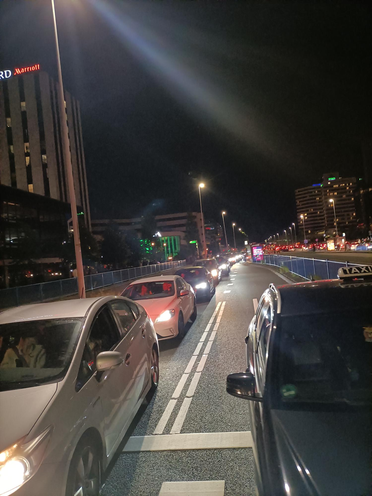

Rythm Ritje
graduation project
The problem
The ArenAPoort area in the South-East of Amsterdam houses three large event venues. It experiences extremely high traffic levels during peak periods just before and after events. On occasions when three events concur, more than 150,000 people commute to and from the area, with over half of the visitors travel by car. This results into a significant increase in emissions. Many visitors choose to use cars either out of habit or due to lack of alternative options. Traffic congestion is the downside for visitors traveling by car, as their motto is "the faster the travel, the better." This is where Rythm Ritje comes into play for concertgoers.
